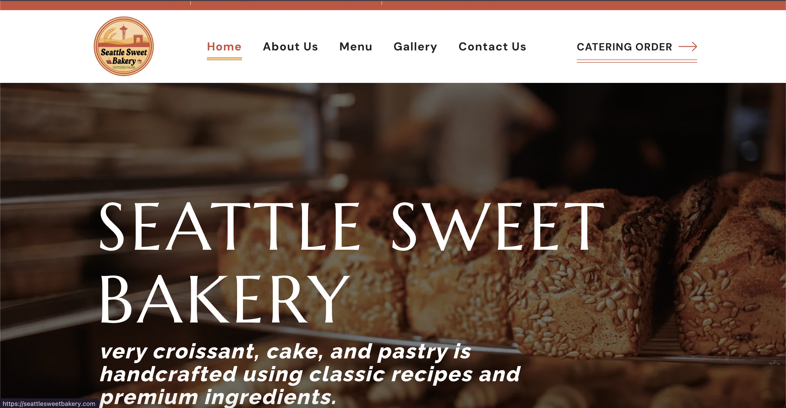
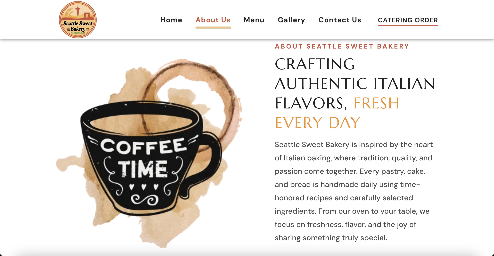
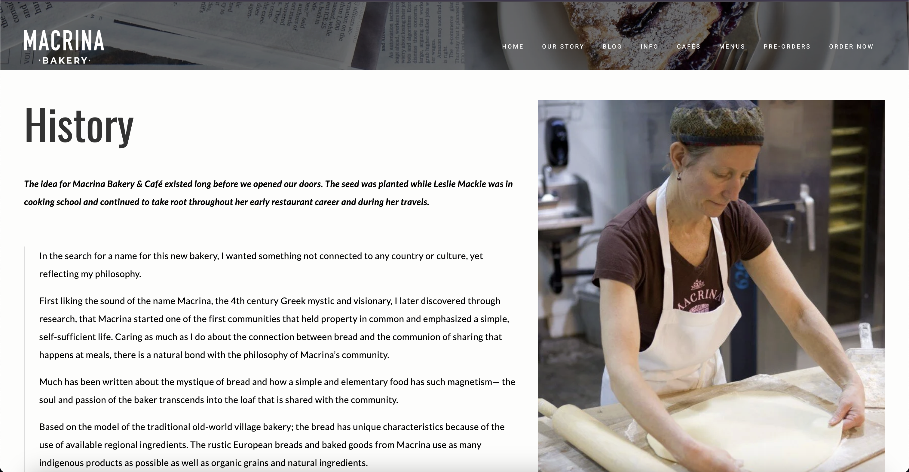
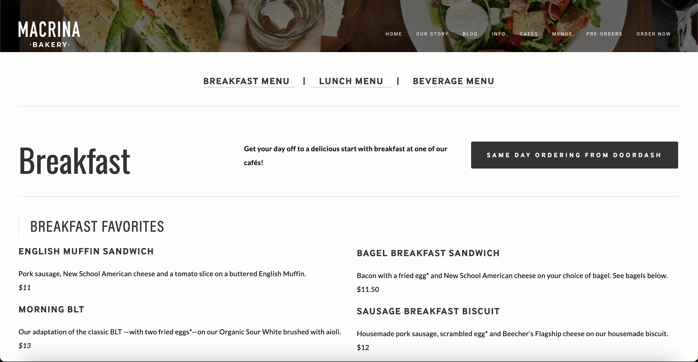
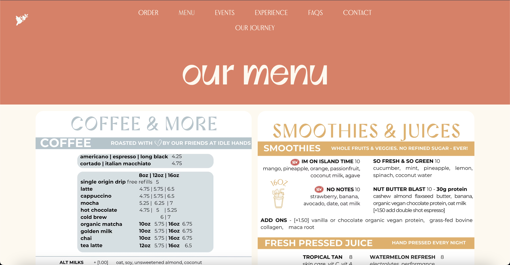

Final project proposal
Introduction
Home Sweet Cafe
This company is a cafe located in Seattle, Washington which takes pride in its fresh baked goods, and strives to create a space where people can gather to enjoy some time, pastries, and beverages together.
Target audience
The main people who visit this cafe are people who enjoy quality coffee or tea based beverages, and quality fresh baked goods. They also enjoy a third-space where they can go to meet with friends.
The main goals of people who visit are they either want a space where they can have a casual gathering with their friends, or a relaxing space to get some work or studying done. They would visit this cafe to enjoy quality baked goods and beverages.
Comparative analysis
Seattle Sweet Bakery


Macrina Bakery


Pacha


Website content
Home
Where quality good and coffee help to create quality connections
[Welcoming cafe interior]
About Us
[Chef baking pastries]
Here at Home Sweet Cafe, our goal has always been to create a welcoming space, with great people and amazing products, in a way that truly adds value to the community around us. We believe that community and human connection is extremely valuable, and we believe that the taste of a delicious baked good or cup of coffee can help to empower that connection.
All of our pastries and baked goods are made with care in house using quality ingredients. They are made fresh every morning to ensure freshness and delicious flavor in every bite. From early morning coffee runs to afternoon gatherings, we strive to provide products that make every visit special.
Home Sweet Cafe is more than a place to just stop and grab a drink. It’s a place where people can slow down and relax. We hope to make every guest feel at home through friendly service, cozy surroundings, and food made with care.
Menu
Beverages
[A latte mug from a top-down angle]
- Cappucchino
- Rich espresso mixed with steamed milk and and a layer of milk foam
- $5.50
- Latte
- Dark, rich espresso balanced with steamed milk and a light layer of foam
- $5.50
- Mocha
- Rich espresso and chocolate syrup combined with steamed milk to create a smooth, creamy beverage
- $6.00
- Chai Latte
- Black tea infused with cinnamon, clove, and other warming spices, combined with steamed milk
- $6.00
- Matcha Latte
- A smooth and creamy green tea latte made with ceremonial-grade matcha
- $6.00
Pastries
[Croissants neatly displayed on a plate]
- Butter Croissant
- A classic butter croissant with delicate flaky layers and a golden-brown crust
- $4.75
- Chocolate Croissant
- A delicate and flaky butter croissant filled with semi-sweet chocolate, topped with a chocolate drizzle and powdered sugar
- $5.00
- Raspberry Danish
- A flaky, buttery pastry with a sweet cream cheese and fresh raspberry filling
- $5.50
- Cinammon Roll
- A soft, fluffy roll filled with a rich brown sugar and cinnamon center, glazed with a sweet cream cheese frosting
- $5.25
Baked Goods
[Banana bread neatly displayed on a plate]
- Chocolate Zucchini Bread
- A rich, moist bread packed with fresh and finely grated zucchini, cocoa, and melty chocolate chips
- $4.75
- Banana Walnut Bread
- A moist bread made with freshly-ripe bananas, and loaded with toasted walnuts for a perfect balance of sweetness and roasted nuttiness
- $4.75
- Glazed Lemon Loaf
- A fluffy and citrusy bread made with fresh lemons and topped with a sweet icing
- $4.75
Breakfast
[Avocado toast from top-down view on plate]
- Sausage, Egg, and Cheese Sandwich
- Sausage patty, scrambled egg, and cheddar cheese served on freshly baked bread
- $5.00
- Bacon, Egg, and Cheese Sandwich
- Crispy bacon, scrambled egg, and cheddar cheese served on freshly baked bread
- $5.00
- Avocado Toast
- Fresh sourdough toast topped with mashed avocado and two fried eggs
- $6.50
Contact
1420 5th Ave Suite 102, Seattle, WA, 98101
206-789-1324
Hours
Monday-Friday: 7am-6pm
Saturday-Sunday: 7am-4pm